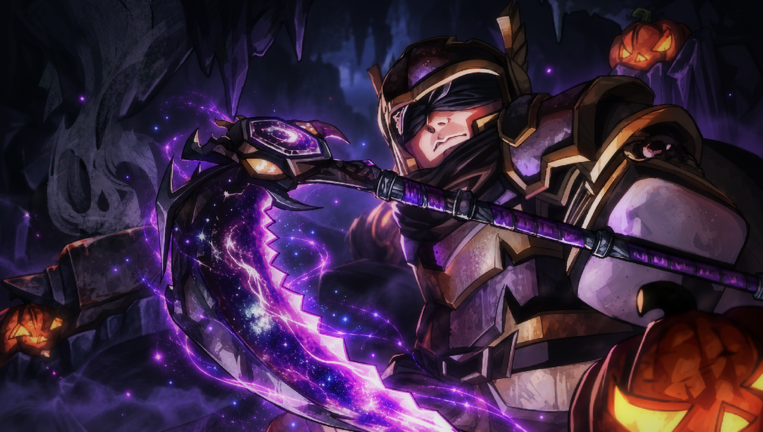
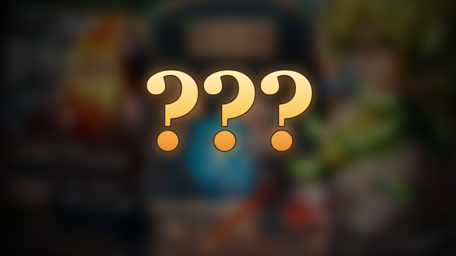

⚒️ The Forge: update-ul de Halloween + Guilds a pornit

🔄 UPDATE 27 oct (✅ CONFIRMAT): Halloween Week 2 („Halloween Second Week”) pornește în seara asta, marți, 27 oct, la 20:00 (ora României), și ține până duminică, 1 nov, la 02:00 (ora României), conform paginii oficiale a eventului.

Ce scrie pe pagina oficială:
• 🎃 Quest-uri noi de event, Haunted Nights în fiecare oră, Witch's Cauldron și Pumpkin King.
• 🪨 Golemites: îți forjezi un Golemite din minereuri. Te urmează, minează și se luptă cu tine. Îl hrănești zilnic cu un Golem Snack ca să crească.
• 📜 Quest-uri: pe Island 2 duci lăzile Supplier-ului și ai un Quick Errand zilnic; pe Island 4 ai Shogun's Trial și questline-ul lui Hayato. NPC-urile au acum semne „!” și „?” deasupra.
• 🗺️ Minimap și hartă nouă, plus Waypoints noi pe Island 2 și 3.
• ⚔️ Raid-urile dau acum Suryafal, Wolfarite și Supermassive Black Hole. Darkryte, Gargantuan, Takiseki, Vooite, Vanegos, Fichilliumorite, Kitsunite și Asura's Kyubite pică mai des. Aurul din raid a fost redus.
• 🔨 Matrițe noi: pentru arme Reaper și Asura's Incarnate, pentru armuri Deathaxe Skeleton, Prismarine Spider și Golem.
• 🖥️ Interfață refăcută: Quests, Index, Stash, Vault, fereastra de Party, Emote wheel, layout de HUD și preseturi grafice. Dash-uri noi pentru Dryad, Demon și Orc Lord.
• 👀 Anunțat pentru săptămâna viitoare: The Abyss și Medallions pentru enhancing. Data exactă nu e anunțată încă.
Eventul mare de Halloween + Guilds rămâne până pe 7 noiembrie, ca mai jos.
──────────
Update-ul de Halloween din The Forge a pornit marți seara, 20 octombrie, la 21:00 (ora României), și vine la pachet cu sistemul nou de Guilds.
Ce aduce, conform paginii oficiale a evenimentului:
• ⚔️ Guilds: îți faci echipa cu prietenii și creșteți împreună.
• 🎃 Event de Halloween care se joacă pe toate insulele.
• 🍬 Candy de strâns pe fiecare insulă, plus un shop de Halloween cu recompense doar pentru event.
• 🕸️ Și alte surprize pe care dezvoltatorii nu le-au arătat încă.
Detaliile complete sunt în Mailbox-ul din joc.
Eventul ține până sâmbătă, 7 noiembrie, la 22:55 (ora României).
Follow pe TikTok @vexu_online și abonare pe YouTube la VEXU Online. Follow = Au ce bile! 💥